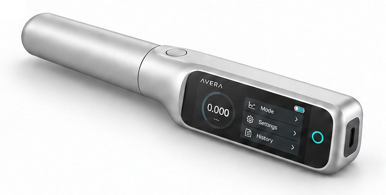

액상 미녹시딜 사용자를 위해 개발 중
매번 계량하고
바르기, 덜 번거롭게
혼자서는 보이지 않는 정수리. 아베라는 위치를 보며 도포하고, 그 순간을 기록하는 기기를 개발합니다.
기기 외관

웹 시뮬레이션
도포 위치, 감 대신
화면으로 보면?
정수리 한 곳을 골라 가상으로 도포해 보세요.
방금 고른 위치와 시각이 기록에 함께 남습니다.

정수리 예시위치 선택 대기
- 위치 선택
- 가상 도포
- 기록 확인
어디에 도포해 볼까요?
사진 속 A 또는 B를 눌러보세요. 선택한 지점의 두피 모습을 확대해 볼 수 있어요.
확대 예시지점을 선택하세요선택한 위치가 여기에 표시됩니다.
내 체험 기록
모의 작동 1회 · 예시 이미지
로그인·카메라 권한 없이 체험할 수 있어요.
개발 계획
도포부터 기록까지,
무엇을 확인할까요?
아베라는 기기와 연동 앱을 개발 중입니다.
2027년 6월 판매를 목표로 합니다.
- 계량과 도포
- 설정량을 접촉 도포하는 구조를 개발합니다. 실제 토출량, 두피 전달량, 묻음과 정리 부담은 시제품으로 확인할 예정입니다.
- 화면과 위치
- 카메라로 보며 도포하고 부위를 인식하는 기능을 계획합니다. 초점, 모발 가림, 위치 인식 정확도를 검증합니다.
- 사진과 기록
- 사진과 기기 작동 이력을 한 건으로 묶는 것이 목표입니다. 기록 누락과 같은 부위 촬영의 재현성을 확인합니다.
- 광원
- 적색 기본 모드와 선택 광원을 계획합니다. 출력과 발열, 촬영 시 화면에 미치는 영향을 확인할 예정입니다.
예상 비용
본체와 교체품,
미리 알아두세요.
개발 단계의 가격 계획입니다.
약액은 별도이며 배송비는 착불입니다.
본체240,000원
월 교체품 예시5,792원
카트리지 413원 × 4개 + 팁 69원 × 60개의 예시입니다. 실제 사용량에 따라 달라집니다.
사진·사용 이력·개인 통계는 무료 제공을 계획하고 있습니다.
자주 묻는 질문
내 두피 사진이나 기록이 전송되나요?
체험에는 생성된 예시 이미지를 사용합니다. 위치와 시각은 현재 브라우저 탭에만 보관하며, ‘다시 해보기’를 누르면 체험 기록이 초기화됩니다.
웹 체험으로 실제 도포량이나 효과를 알 수 있나요?
화면에 표시하는 값은 모의 작동 횟수입니다. 실제 도포량, 편의성, 치료 효과는 이 체험으로 확인할 수 없습니다.
지금 구매할 수 있나요?
현재는 개발 중이며 판매 목표는 2027년 6월입니다. 약액 호환 범위, 세척법, 보증·교환 조건은 확정 후 안내할 예정입니다.